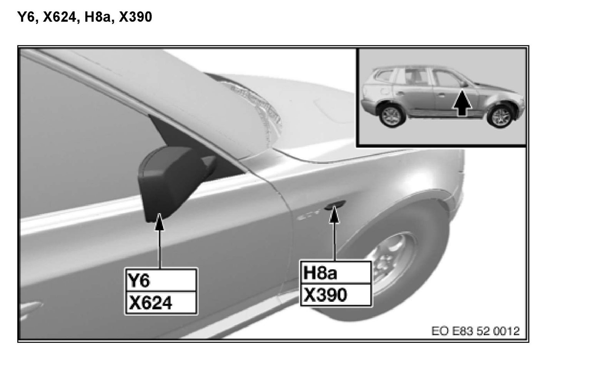

Operation CHARM
: Car repair manuals for everyone.
Home
>>
BMW
>>
2007
>>
X3 3.0si (E83) L6-3.0L (N52K)
>>
Repair and Diagnosis
>>
Locations
>>
Connector Locations
>>
Connectors From X6
>>
X624 Adapter 616031/-33, Storage Location D107/-9 (X Series_X3-E83)
X624 Adapter 616031/-33, Storage Location D107/-9 (X Series_X3-E83)
